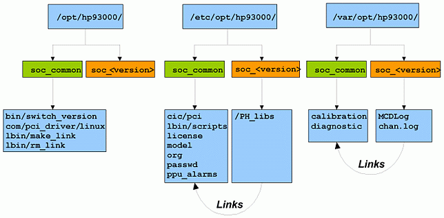

SmarTest directory structure
During the installation process, some data and configuration files are treated as version-specific and some as common to all versions. The version-specific files are stored directly in their appropriate version directories, for example /etc/opt/hp93000/soc_<version> and /var/opt/hp93000/soc_ <version>. The common files, are stored in for example in /etc/opt/hp93000/soc_common and /var/opt/hp93000/soc_common and symbolic links from the version-specific directories point to the common files. See the figure below for details about the SmarTest directory structure using Switch Tool.

The first table below gives a brief overview of which files are version-specific and the second table shows which files are common.
Description and Path |
Comment |
|---|---|
Prober/Handler libraries /etc/opt/hp93000/soc_<version>/PH_Libs |
The Prober/Handler configuration files may need to change as the SmarTest software evolves. |
Text editor for equations, specification and wavetable data /opt/hp93000/soc_<version>/pws/lbin/start_edt_env |
This script may need to change as the SmarTest software evolves. |
Prober/Handler data files /var/opt/hp93000/soc_<version>/PH_Libs |
Stores messages from probers/handlers from the last time the prober/handler was used. |
Description and Path |
Comment |
|---|---|
Lower level binaries /etc/opt/hp93000/soc_common/lbin/ |
For each executable a link in the corresponding version-specific directory points to the common executable. |
Miscellaneous configuration files
|
In most cases, these files can be shared between versions. For each file listed, a link in the corresponding version directory points to the common file. |
Calibration directory /var/opt/hp93000/soc_common/calibration |
Typically these files can be shared between versions. When the format of the calibration file changes the calibration files can be shared by multiple versions. |
System Information Files directory /var/opt/hp93000/soc_common/.sif_files |
For HP-UX, the files remain in /var/opt/hp93000/soc. |
Data directories
|
Data files generated by any version of the SmarTest software will be stored in these common directories. For each directory listed, a link in the corresponding version-specific directory points to common directory. |
Data files
|
These data files are created as part of the installation process and are shared by all versions of the SmarTest software. For each file listed, a link in the corresponding version-specific directory points to the common file. |
Functional changes
- Introduced before SmarTest 6.3.2